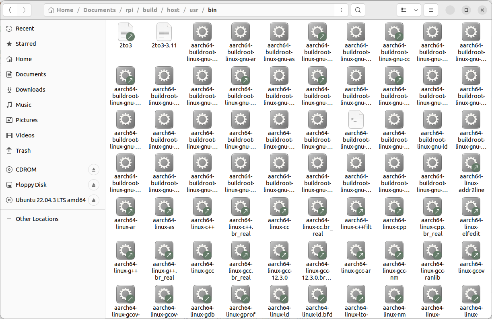
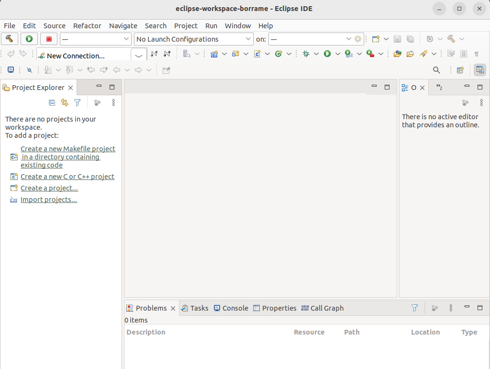
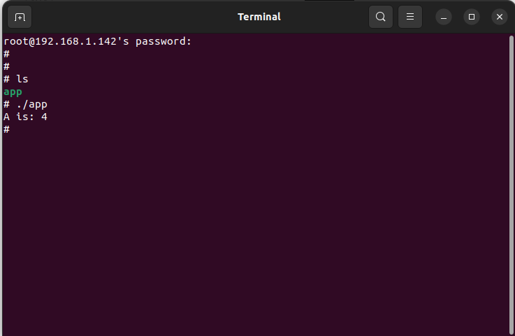

Using the integrated development environment Eclipse/CDT
Eclipse IDE for C/C++ developers
The Eclipse IDE CDT is installed in the virtual machine. You can execute it running eclipse in a window terminal.
Cross-Compiling applications using Eclipse
How will a program be compiled? Remember that we are developing cross applications. We are developing and compiling the code in a Linux x86_64 machine, and we are executing it on an ARM architecture (see Fig. 17).
Fig. 17: Summary of the different configurations for developing applications for embedded systems. Figure copied from “Free Electrons” training materials (http://free-electrons.com/training/)
The first question is where the cross-compiler and other cross-tools are located. The answer is this: in the folder “build/host/usr/bin”. If you inspect this folder’s content, you can see the entire compiling, linking, and debugging tools (see Fig. 18). These programs are executed in your x86_64 computer, but they generate code for the ARM processor.
{kind=link}
Fig. 18: Cross-compiling tools installed in the host computer
In a Terminal window execute the following commands:
$ cd build/host
$ source environment-setup
$ eclipse &
The environment-setup file contains the code listed below.
cat <<'EOF'
_ _ _ _ _
| |__ _ _(_) | __| |_ __ ___ ___ | |_
| '_ \| | | | | |/ _` | '__/ _ \ / _ \| __|
| |_) | |_| | | | (_| | | | (_) | (_) | |_
|_.__/ \__,_|_|_|\__,_|_| \___/ \___/ \__|
Making embedded Linux easy!
Some tips:
* PATH now contains the SDK utilities
* Standard autotools variables (CC, LD, CFLAGS) are exported
* Kernel compilation variables (ARCH, CROSS_COMPILE, KERNELDIR) are exported
* To configure do "./configure $CONFIGURE_FLAGS" or use
the "configure" alias
* To build CMake-based projects, use the "cmake" alias
EOF
if [ x"$BASH_VERSION" != x"" ] ; then
SDK_PATH=$(dirname $(realpath "${BASH_SOURCE[0]}"))
elif [ x"$ZSH_VERSION" != x"" ] ; then
SDK_PATH=$(dirname $(realpath $0))
else
echo "unsupported shell"
fi
export "AR=aarch64-buildroot-linux-gnu-gcc-ar"
export "AS=aarch64-buildroot-linux-gnu-as"
export "LD=aarch64-buildroot-linux-gnu-ld"
export "NM=aarch64-buildroot-linux-gnu-gcc-nm"
export "CC=aarch64-buildroot-linux-gnu-gcc"
export "GCC=aarch64-buildroot-linux-gnu-gcc"
export "CPP=aarch64-buildroot-linux-gnu-cpp"
export "CXX=aarch64-buildroot-linux-gnu-g++"
export "FC=aarch64-buildroot-linux-gnu-gfortran"
export "F77=aarch64-buildroot-linux-gnu-gfortran"
export "RANLIB=aarch64-buildroot-linux-gnu-gcc-ranlib"
export "READELF=aarch64-buildroot-linux-gnu-readelf"
export "STRIP=aarch64-buildroot-linux-gnu-strip"
export "OBJCOPY=aarch64-buildroot-linux-gnu-objcopy"
export "OBJDUMP=aarch64-buildroot-linux-gnu-objdump"
export "AR_FOR_BUILD=/usr/bin/ar"
export "AS_FOR_BUILD=/usr/bin/as"
export "CC_FOR_BUILD=/usr/bin/gcc"
export "GCC_FOR_BUILD=/usr/bin/gcc"
export "CXX_FOR_BUILD=/usr/bin/g++"
export "LD_FOR_BUILD=/usr/bin/ld"
export "CPPFLAGS_FOR_BUILD=-I$SDK_PATH/include"
export "CFLAGS_FOR_BUILD=-O2 -I$SDK_PATH/include"
export "CXXFLAGS_FOR_BUILD=-O2 -I$SDK_PATH/include"
export "LDFLAGS_FOR_BUILD=-L$SDK_PATH/lib -Wl,-rpath,$SDK_PATH/lib"
export "FCFLAGS_FOR_BUILD="
export "DEFAULT_ASSEMBLER=aarch64-buildroot-linux-gnu-as"
export "DEFAULT_LINKER=aarch64-buildroot-linux-gnu-ld"
export "CPPFLAGS=-D_LARGEFILE_SOURCE -D_LARGEFILE64_SOURCE -D_FILE_OFFSET_BITS=64"
export "CFLAGS=-D_LARGEFILE_SOURCE -D_LARGEFILE64_SOURCE -D_FILE_OFFSET_BITS=64 -Os -g0 -D_FORTIFY_SOURCE=1"
export "CXXFLAGS=-D_LARGEFILE_SOURCE -D_LARGEFILE64_SOURCE -D_FILE_OFFSET_BITS=64 -Os -g0 -D_FORTIFY_SOURCE=1"
export "LDFLAGS="
export "FCFLAGS= -Os -g0"
export "FFLAGS= -Os -g0"
export "PKG_CONFIG=pkg-config"
export "STAGING_DIR=$SDK_PATH/aarch64-buildroot-linux-gnu/sysroot"
export "INTLTOOL_PERL=/usr/bin/perl"
export "ARCH=arm64"
export "CROSS_COMPILE=aarch64-buildroot-linux-gnu-"
export "CONFIGURE_FLAGS=--target=aarch64-buildroot-linux-gnu --host=aarch64-buildroot-linux-gnu --build=x86_64-pc-linux-gnu --prefix=/usr --exec-prefix=/usr --sysconfdir=/etc --localstatedir=/var --program-prefix="
alias configure="./configure ${CONFIGURE_FLAGS}"
alias cmake="cmake -DCMAKE_TOOLCHAIN_FILE=$SDK_PATH/share/buildroot/toolchainfile.cmake -DCMAKE_INSTALL_PREFIX=/usr"
export "PATH=$SDK_PATH/bin:$SDK_PATH/sbin:$PATH"
export "KERNELDIR=/home/ubuntu/Documents/rpi/build/build/linux-custom/"
This script when is source in a terminal window sets all the environment variables needed to use the cross-compilation tools and add the folder of cross-tools to the PATH linux variable.
The execution of eclipse popups a window inviting you to enter the workspace (see Fig. 19). The workspace is the folder that contain eclipse projects created by the user. You can have as many workspaces as you want. Please specify a folder in your account.
[Help]: The figures displayed in the following paragraphs can be different depending on the Eclipse version installed. |
|
|---|---|
{kind=link}
Fig. 19: Selection of the workspace for Eclipse. Use a folder in your account.
Select Ok, and the welcome window of Eclipse will be shown (Fig. 20). Next, close the welcome window and the main eclipse window will be displayed (Fig. 21).

Fig. 20: Eclipse welcome window.
{kind=link}
Fig. 21: Eclipse main window.
In a terminal window create an empty folder. In this folder create the following files with the content described in the Table 2. The Makefile uses the environment variables that are defined in the environment where the makefile is run.
Filename |
Content |
|---|---|
Makefile |
LIBS= -lpthread -lm #Libraries used if needed SRCS= main.cpp func.cpp BIN=app CFLAGS+= -g -O0 OBJS=$(subst .cpp,.o,$(SRCS)) all : $(BIN) $(BIN): $(OBJS) @echo [link] $@ $(CXX) -o $@ $(OBJS) $(LDFLAGS) $(LIBS) %.o: %.cpp @echo [Compile] $< $(CXX) -c $(CFLAGS) $< -o $@ clean: @rm -f $(OBJS) $(BIN) |
main.cpp |
#include “func.h” #include <iostream> int main(void){ int b=2; std::cout<<”A is: “<< fun(b) << std::endl; } |
func.h |
#ifndef __FUNC_H #define __FUNC_H int fun(int); #endif |
func.cpp |
int fun(int b){ int a=b*2; return a; } |
In Eclipse select in the left part of the windows Import projects. A new window is popup, select then C/C++ and the option Existing Code as Makefile Project. The window shown in Fig. 22 is displayed. Complete the name of the project, select the folder with the code and check Cross GCC in Toolchain for Indexer Settings.

Fig. 22: Selecting the code.
Building a project
Once you have configured the cross-chain in Eclipse you can build your project using Project->Build Project. If everything is correct, you will see the eclipse project as represented in Fig. 29. You can clean the project (remove the executable and objects) with Clean.

Fig. 23: Eclipse project compiled (Binaries has been generated)
[Console in Eclipse]: Have a look at the messages displayed in the Console. You will see how eclipse is calling the cross compiler with different parameters. |
|
|---|---|
Moving the binary to the target
In order to copy the executable to the target, you have different options. You can use the Linux application called “scp” or other similar applications. In our case, we are going to use the “Other Locations….” utility included in the nautilus explorer. Specify in Server Address ssh://<ip address>

Fig. 24: “Connect to Server” option in Nautilus explorer
Executing the application
You can run the Raspberry PI program using putty (remember that once you have a network connection available in the RPI you can also use putty to connect to it).
{kind=link}
Fig. 25: Run test program in Raspberry Pi
Warning. If you experiment problems using ssh, delete the .ssh folder in your home directory. |
|
|---|---|
Automatic debugging using gdb and gdbserver
You can directly debug the program running in the RPI using Eclipse. There are two methods to do it: manually and automatically. In the manual method, firstly, you need to copy the executable program to the RPI, change the file permissions to “executable” and execute the program to be debugged using gdbserver utility. Of course, this is a time-consuming process and very inefficient. The alternative solution is to use automatic debugging. In order to debug your applications, we need to define a debug session and configure it. Firstly, Select Run->Debug Configurations and generate a new configuration under C/C++ Remote Application. You need to complete the different tabs available in this window. The first one is the main tab (see Fig. 33). You need to configure here the path to the C/C++ application to be debugged, the project name, the connection with the target (you will need to create a new one using the IP address of your RPI), the remote path where your executable file will be downloaded, and the mode for the debugging (Automatic Remote Debugging Launcher). Secondly, in the argument tab, you can specify the arguments of your executable program. It is very important here that you can also specify the working directory path where the executable will be copied and launched (you need to have rights in this folder).

Fig. 26: Creating a Debug Configuration
In the debugger window you need to configure the path of your cross gdb application. Remember that we are working with a cross-compiler, cross debugging. Therefore, you need to provide here the correct path of your gdb. The GDB command file (.gdbinit) must be specified, providing a path with an empty file. In the Gdbserver settings tab, you need to provide the path to the gdbserver in the target and the TCP/IP port used (by default 2345).
Fig. 27: Debug configuration, including the path to locate the cross gdb tool.
Now, press Debug in Eclipse window, and you can debug your application remotely.

Fig. 28: Debugging session on the RPI remotely
Preparing the linux virtual machine.
Download VMware Workstation Player.
The link https://www.vmware.com/support/pubs/player_pubs.html contains documentation describing the installation and basic use of VMware Workstation Player. Follow the instructions to set up the application on your computer.
Installing Ubuntu 22.04 LTS as a virtual machine.
[Ubuntu version]: It is mandatory to install Ubuntu 22.04 version. |
|
|---|---|
The first step is to download Ubuntu 22.04.3 (64 bit PC) from Ubuntu web site using this link: http://releases.ubuntu.com/ . You will download an ISO image with this Linux operating System.Run WMware player and install Ubuntu using the VMWare player instructions. Consider the following when creating the virtual machine: you need at least 150Gbytes of hard disk space (in multiple files), 3GByte of RAM, and, if possible 4 processors. The installation time will be half an hour, more or less, depending on your computer. Moving a virtual machine from one computer to another is a time-consuming task; therefore, take this into account to minimize the development time.
Installing synaptic
If you need to install software packages, you can do it using the linux terminal command apt-get. Another alternative process is the use of the synaptic utility. In order to use it, you need to install it using this command:
$ sudo apt-get install synaptic
Once installed, you can search and execute the synaptic program. When you click two times over the package, it will show all the dependent packages that would be installed.

Fig. 30: Synaptic window
Installing putty
You need to execute:
sudo apt-get install putty
Installing packages for supporting Buildroot.
Using buildroot requires some software packages that have to be installed in the VM. These are listed in this link http://buildroot.uclibc.org/downloads/manual/manual.html#requirement. You need to install at least:
g++
git
Installing packages supporting Eclipse
You need to install:
eclipse-cdt (eclipse C/C++ programming)
eclipse-rse (eclipse remote explorer)
eclipse-cdt-launch-remote (eclipse for remote debugging)